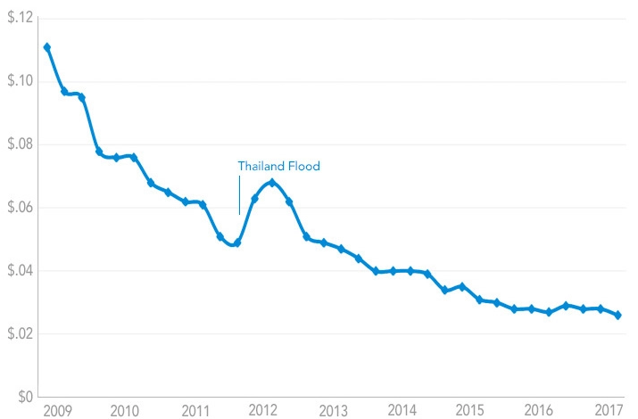

ANÁLISE COMPARATIVA DO SGBD SQL SERVER BASEADO EM DISCO E EM MEMÓRIA
Rafael Carcuchinski Vargas
Orientador: Edvar Bergmann Araújo
Roteiro
- INTRODUÇÃO
- REFERENCIAL TEÓRICO
- PREPARAÇÃO DO AMBIENTE
- EXPERIMENTOS REALIZADOS
- TRABALHO RELACIONADO
- CONCLUSÃO
Introdução - MOTIVAÇÃO
Introdução - OBJETIVOS
Prós e contras de memória e disco
Referencial Teórico - POR QUE MEMÓRIA?
Custo por GB
Referencial Teórico - POR QUE MEMÓRIA?
Relação tempo e dinheiro
Referencial Teórico - Concorrentes
Referencial Teórico - ÍNDICES EXCLUSIVOS DA MEMÓRIA
- Memory-Optimized Nonclustered Index
- Hash Index
Referencial Teórico - ARQUITETURA

Referencial Teórico - COMPRESSÃO
Compressão por linha
| Valor | 125 | SQL |
| Tipo de Dado | Int | Char (20) |
| Espaço Ocupado | 4 Bytes | 20 Bytes |

| Valor | 125 | SQL |
| Tipo de Dado | TinyInt | Char (3) |
| Espaço Ocupado | 1 Byte | 3 Bytes |
Referencial Teórico - COMPRESSÃO
Compressão por página
| ID | Nome | Sobrenome |
|---|---|---|
| 123 | Alexander | Smith |
| 789 | Alexandra | Smith |
| 1234 | Alexis | Smith |
| 1287 | Andrew | Smith |
| 1789 | Austin | Smith |
| ID | Nome | Sobrenome |
|---|---|---|
| 1234 | Alexander | Smith |
| [3] | [NULL] | [NULL] |
| 789 | [7]ra | [NULL] |
| [NULL] | [4]is | [NULL] |
| [2]87 | [1]ndrew | [NULL] |
| [1]789 | [1]ustin | [NULL] |
Referencial Teórico - CONVERSÃO
Como transformar disco em memória?
CREATE TABLE Pessoa (
CodPessoa Int NOT NULL PRIMARY KEY,
Nome Varchar(100) NOT NULL,
CPF INT NOT NULL
)
/* NONCLUSTERED HASH WITH (BUCKET_COUNT = 1000)
WITH (MEMORY_OPTIMIZED = ON, DURABILITY = SCHEMA_AND_DATA) */
Preparação do Ambiente - DADOS
| Tabela | Registros | Tamanho Arquivo | Ponto de Quebra | Arquivos Gerados | Tempo |
|---|---|---|---|---|---|
| Users | 5.987.285 | 1.7 GB | 200.000 | 30 | 00:02:34 |
| Badges | 18.395.121 | 2.1 GB | 500.000 | 37 | 00:04:22 |
| PostHistory | 77.910.283 | 74.8 GB | 80.000 | 974 | 01:29:30 |
| Posts | 32.209.817 | 47.7 GB | 50.000 | 645 | 00:51:21 |
| PostLinks | 3.335.637 | 0.4 GB | 100.000 | 34 | 00:00:42 |
| Comments | 48.998.958 | 12.5 GB | 200.000 | 245 | 00:18:55 |
| Tags | 45.426 | 0.039 GB | 30.000 | 2 | 00:00:01 |
| Votes | 105.301.745 | 10 GB | 500.000 | 211 | 00:14:49 |
| Total | 292.184.272 | 149.239 GB | - | 2.178 | 03:02:14 |
Preparação do Ambiente - CARGA DOS DADOS


INSERT INTO XmlPosts
SELECT 1,CONVERT(xml, BulkColumn, 2) as BulkColumn FROM
OPENROWSET(Bulk 'D:\XmlQuebrado\Posts\Posts_1.xml', SINGLE_BLOB)[rowsetresults]
declare @X1 xml = (select XmlCol from XmlPosts where linha = 1)
insert into Posts
SELECT
[Id] = XTbl.TypeNode.value('@Id', 'Int')
,[PostTypeId] = XTbl.TypeNode.value('@PostTypeId', 'int')
,[AcceptedAnswerId] = XTbl.TypeNode.value('@AcceptedAnswerId', 'int')
,[CreationDate] = XTbl.TypeNode.value('@CreationDate', 'datetime')
,[Score] = XTbl.TypeNode.value('@Score', 'int')
,[ViewCount] = XTbl.TypeNode.value('@ViewCount', 'int')
,[Body] = XTbl.TypeNode.value('@Body', 'varchar(max)')
,[OwnerUserId] = XTbl.TypeNode.value('@OwnerUserId', 'int')
,[LastEditorUserId] = XTbl.TypeNode.value('@LastEditorUserId', 'int')
,[LastEditorDisplayName] = XTbl.TypeNode.value('@LastEditorDisplayName', 'varchar(300)')
,[LastEditDate] = XTbl.TypeNode.value('@LastEditDate', 'datetime')
...
FROM
@X1.nodes('/row') AS XTbl(TypeNode)
Experimentos Realizados - EXPERIMENTOS
Foram realizados diversos experimentos, verificando os beneficios com diferentes operações.
Consulta com filtro pela Primary Key
Busca por post específico
select * from Posts where Id = 2334712
Retornando 1 linha de registro
| Disco | Memória |
|---|---|
| 00:00:00:017 | 00:00:00:000 |
| 00:00:00:010 | 00:00:00:000 |
| 00:00:00:010 | 00:00:00:000 |
| 00:00:00:012 | 00:00:00:000 |
| 00:00:00:014 | 00:00:00:000 |
| Média | |
|---|---|
| 00:00:00:013 | 00:00:00:000 |
| Diferença |
|---|
| 1300% |
Consulta com filtro pela Foreign Key
Busca por posts de usuário específico
select * from Posts where OwnerUserId = 150939
Retornando 45 linhas de registro
| Disco | Memória |
|---|---|
| 00:10:38:023 | 00:00:09:207 |
| 00:10:39:583 | 00:00:09:187 |
| 00:10:38:030 | 00:00:09:140 |
| 00:10:39:067 | 00:00:09:237 |
| 00:10:39:917 | 00:00:09:130 |
| Média | |
|---|---|
| 00:10:38:923 | 00:00:09:180 |
| Diferença |
|---|
| 6860% |
Consulta com Like
select * from Comments where Text Like '%SQL%'
Retornando 1.008.654 linhas de registro
| Disco | Memória |
|---|---|
| 00:05:37:110 | 00:03:19:329 |
| 00:05:39:493 | 00:03:18:163 |
| 00:05:39:280 | 00:03:17:277 |
| 00:05:38:530 | 00:03:17:037 |
| 00:05:39:960 | 00:03:20:553 |
| Média | |
|---|---|
| 00:05:38:877 | 00:03:18:473 |
| Diferença |
|---|
| 71% |
Inserção de dados - 1 Milhão
Select * into ##Comment2 from Comments where id >= 61767110
Delete Comments where id >= 61767110
insert into Comments
select * from ##Comments2
| Disco | Memória |
|---|---|
| 00:00:18:284 | 00:00:14:603 |
| 00:00:17:825 | 00:00:17:490 |
| 00:00:18:030 | 00:00:16:568 |
| 00:00:18:592 | 00:00:15:014 |
| 00:00:18:137 | 00:00:17:439 |
| Média | |
|---|---|
| 00:00:18:173 | 00:00:16:223 |
| Diferença |
|---|
| 12% |
Exclusão de dados - 1 Milhão
Delete Comments where id >= 61767110
| Disco | Memória |
|---|---|
| 00:00:28:525 | 00:00:03:323 |
| 00:00:29:478 | 00:00:05:221 |
| 00:00:29:925 | 00:00:04:503 |
| 00:00:28:793 | 00:00:04:027 |
| 00:00:29:076 | 00:00:03:964 |
| Média | |
|---|---|
| 00:00:29:159 | 00:00:04:208 |
| Diferença |
|---|
| 593% |
Alteração de dados
Update Posts set Body = 'Teste' where OwnerUserId = 150939
Alterando 45 registros
| Disco | Memória |
|---|---|
| 00:10:36:097 | 00:00:06:750 |
| 00:10:35:590 | 00:00:06:589 |
| 00:10:35:107 | 00:00:06:759 |
| 00:10:35:863 | 00:00:06:632 |
| 00:10:36:600 | 00:00:06:885 |
| Média | |
|---|---|
| 00:10:35:850 | 00:00:06:723 |
| Diferença |
|---|
| 9358% |
Consulta com Join entre tabelas
Buscar dados de um usuário específico
Select * from Posts P
INNER JOIN PostHistory PH
on PH.PostId = P.Id
Where P.OwnerUserId = 150939
Retornando 160 linhas de registro
| Disco | Memória |
|---|---|
| 00:35:10:864 | 00:08:36:656 |
| 00:35:23:966 | 00:08:32:429 |
| 00:35:18:454 | 00:08:30:866 |
| 00:35:15:379 | 00:08:32:197 |
| 00:35:12:438 | 00:08:32:447 |
| Média | |
|---|---|
| 00:35:16:220 | 00:08:33:120 |
| Diferença |
|---|
| 312% |
Consulta com filtro pela Foreign Key
Busca por posts de usuário específico com Bucket
Hash(OwnerUserId)
Bucket_Count = 3.000.000
select * from Posts where OwnerUserId = 150939
Retornando 45 linhas de registro
| Bucket | Memória |
|---|---|
| 00:00:00:086 | 00:00:09:207 |
| 00:00:00:087 | 00:00:09:187 |
| 00:00:00:086 | 00:00:09:140 |
| 00:00:00:088 | 00:00:09:237 |
| 00:00:00:089 | 00:00:09:130 |
| Média | |
|---|---|
| 00:00:00:087 | 00:00:09:180 |
| Diferença |
|---|
| 10428% |
Inserção através de Compiled Stored Procedure - 1 Milhão
Create procedure spExemplo
@Id int
with native_compilation, schemabinding
as
...
| Disco | Memória | Procedure |
|---|---|---|
| 00:02:30:411 | 00:02:05:992 | 00:00:09:076 |
| 00:02:30:793 | 00:02:04:953 | 00:00:09:723 |
| 00:02:29:143 | 00:02:05:864 | 00:00:09:643 |
| 00:02:30:448 | 00:02:05:831 | 00:00:09:983 |
| 00:02:31:027 | 00:02:05:837 | 00:00:09:729 |
| Média | ||
|---|---|---|
| 00:02:30:364 | 00:02:05:695 | 00:00:09:791 |
| Diferença | |
|---|---|
| Disco x Memória | 20% |
| Memória x Procedure | 1184% |
| Disco x Procedure | 1436% |
Exclusão através de Compiled Stored Procedure - 1 Milhão
Create procedure spExemplo
@Id int
with native_compilation, schemabinding
as
...
| Disco | Memória | Procedure |
|---|---|---|
| 00:05:03.267 | 00:04:21.295 | 00:00:02.156 |
| 00:04:58.234 | 00:04:18.198 | 00:00:01.937 |
| 00:05:01.691 | 00:04:19.043 | 00:00:01.993 |
| 00:05:03.538 | 00:04:19.521 | 00:00:02.035 |
| 00:04:58.761 | 00:04:21.383 | 00:00:02.244 |
| Média | ||
|---|---|---|
| 00:05:01.098 | 00:04:19.888 | 00:00:02.073 |
| Diferença | |
|---|---|
| Disco x Memória | 16% |
| Memória x Procedure | 12436% |
| Disco x Procedure | 14423% |
Trabalho Relacionado
COMPARAÇÃO COM TIMESTEN
| Característica | Servidor TimesTen | Servidor SQL Server |
|---|---|---|
| Sistema Operacional | Windows Server 2012 R2 | Windows Server 2016 Standard |
| Processador | Intel (R) Xeon (R) CPU E5-2690 v3 2,6 GHz | Intel (R) Xeon (R) CPU E5506 2.13Ghz |
| Memória RAM | 256 GB | 144 GB |
| Núcleos físicos | 24 | 8 |
Consulta com vinculo entre Posts e Users
Select
P.*
,U.*
FROM Posts P
INNER JOIN Users U
on U.Id = P.OwnerUserId
WHERE U.Id = 601245
Retornando 187* linhas de registro (1 a mais do que o TimesTen)
| SGBD | Tempo |
|---|---|
| Oracle | 00:00:44.400 |
| Timesten | 00:00:01.700 |
| SQL Server Disco | 00:13:20.000 |
| SQL Server Memória | 00:00:09.000 |
| Diferença | |
|---|---|
| Oracle - Disco x Memória | 96% |
| Microsoft - Disco x Memória | 98% |
Alteração de registros com filtro LIKE
Update Comments
Set Text = replace(text,'sed','sed123')
WHERE
Text Like '%Sed%'
Alterando 2.857.537* registros (43.532 a mais do que o TimesTen)
| SGBD | Tempo |
|---|---|
| Oracle | 00:09:45.000 |
| Timesten | 00:02:40.000 |
| SQL Server Disco | 00:38:30.000 |
| SQL Server Memória | 00:24:15.000 |
| Diferença | |
|---|---|
| Oracle - Disco x Memória | 72% |
| Microsoft - Disco x Memória | 36% |
Inserção de 10 mil registros
insert into Tags values (150001,'.net',233796,3624959,3607476)
insert into Tags values (150002,'html',545013,3673183,3673182)
insert into Tags values (150003,'javascript',1143897,3624960,3607052)
...
| SGBD | Tempo |
|---|---|
| Oracle | 00:02:41.150 |
| Timesten | 00:02:38.270 |
| SQL Server Disco | 00:00:03.400 |
| SQL Server Memória | 00:00:03.300 |
| Diferença | |
|---|---|
| Oracle - Disco x Memória | 1,78% |
| Microsoft - Disco x Memória | 2,94% |
CONCLUSÃO